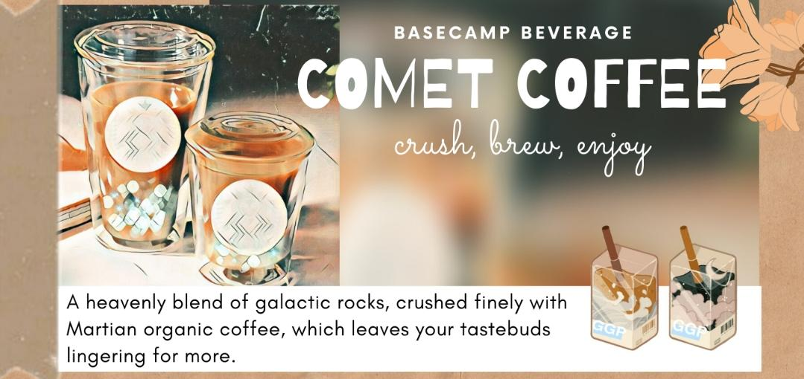

A perfect drink for boosting your dopamine levels with a touch of mystical comets!
Comet coffee is thick and colourful, one of the characteristics of a coffee close to perfect. A balanced drink wherein none of the flavour dominates each other. The acidic nature of the beverage rounds out the different variety of flavours. It is also known for its fruitiness!

FAQ: What is the variability?
Vanilla: A simple yet detectable flavour that adds sweetness to any medium or a light roast coffee.
Caramel Macchiato: What could be more enticing than this deliciously bold taste of creamy caramel and strong coffee flavour!
Pumpkin Spice: Keeps you warm on a cold day! This is a winter special, so get a steaming mug while u can.
Mocha: A beverage with hot cocoa and a hint of coffee flavour, perfect for the people who just got themselves introduced to the world of coffee!